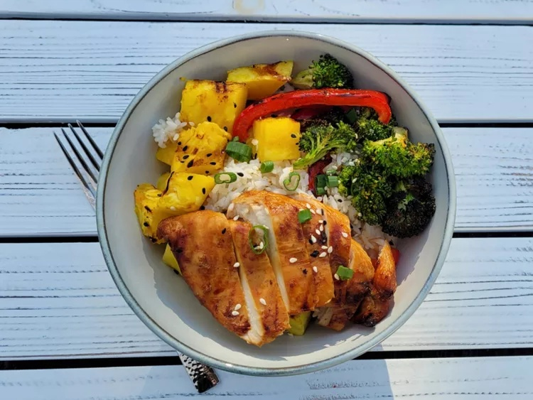

Odin Recipes

Rice Bowl
Description:
Ingredients
- 1/2 cup low-sodium teriyaki marinade
- 2 tablespoons prepared horseradish
- 1 tablespoon chili oil
- 1 pound boneless skinless chicken breast halves
- 1 bunch broccoli, cut into florets
- 1 red bell pepper, cut into strips
- 2 tablespoons sesame oil
- 1 1/2 teaspoons garlic powder
- 1/4 teaspoon freshly ground black pepper
- 1/8 teaspoon salt
- 1 pinch red pepper flakes
- 1 pineapple - peeled, cored, and cut into 6 wedges
- 2 cups cooked white rice
- 1 teaspoon black and white sesame seeds (optional)
- 1 green onion, thinly sliced (optional)
Steps
- Pour teriyaki marinade, horseradish, and chili oil into a resealable plastic bag. Add chicken, coat with the marinade, squeeze out excess air, and seal the bag. Marinate in the refrigerator, at least 4 hours.
- Preheat an outdoor grill for medium-high heat and lightly oil the grate.
- Coat chicken in teriyaki marinade and cook on the prepared grill until no longer pink and juices run clear, 10 to 15 minutes per side. An instant-read thermometer inserted into the center should read at least 165 degrees F (74 degrees C).
- Meanwhile place broccoli florets and red pepper strips in a large bowl. Drizzle with sesame oil and toss to coat. Add garlic powder, black pepper, salt, and crushed red pepper and toss to coat again.
- Place broccoli and red pepper strips in a grill basket and grill, turning occasionally, until tender-crisp, about 10 minutes.
- Grill pineapple until soft and heated through, 2 to 3 minutes per side.
- Slice pineapple and chicken into 1-inch cubes. In 4 separate bowls layer rice, chicken, pineapple, broccoli, and red peppers. Garnish each bowl with sliced green onions and sesame seeds. Drizzle extra teriyaki sauce over each bowl if desired.
Home